217. Contains Duplicate
官方思路:
- hashset
思路整理：
本来以为有bit相关的巧解，结果就是普通的set记录duplicate，很简单的题。
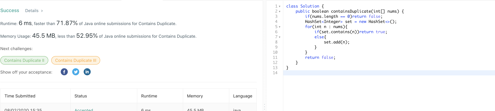219. Contains Duplicate II
官方思路:
- hashmap
思路整理：
使用hashmap同时记录数字和他们出现的位置，遇到之前看到过的数字判断距离是否不超过k，是则直接返回true，否则更新map对应数字为新的位置。遇到没见过的则添加到hashmap。如果遍历数组结束依然没找到距离不超过k的则返回false。
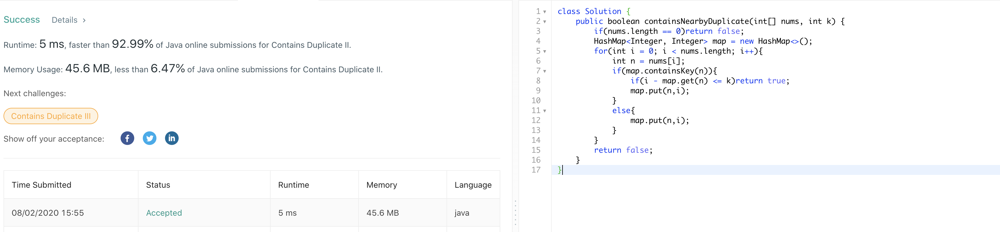220. Contains Duplicate III
官方思路:
- bst
思路整理：
首先题目要求两个位置距离不超过看，并且在这个基础上两个数字差值不能超过t。答案使用的思路是通过二叉查找树来维护一个大小为k的窗口，这个树使用treeset数据结构来达到自平衡的效果。每次新加入一个元素x我们就在窗口内查找x的successor， 也就是大于x的最小数字与x差值是否在t以内，是的话return true，同时查找x的predecessor，也就是比x小的最大元素与x差值是否在t以内，是的话return true。如果加入x后窗口大小超过了k，移除窗口内最老的数子，也就是最早加入的数字来维护窗口 大小不超过k。bst的思路适用于比较一定范围内数字任意两者间最小差值或者类似问题，因为ceiling和floor api 提供了比较一个数字和距离最近的上下邻居的简便途径。
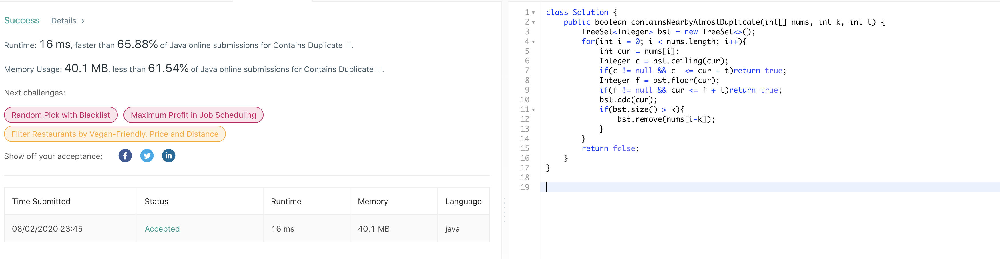221. Maximal Square
官方思路:
- dp
思路整理：
此题使用了一个巧妙的dp思路，根据原数组中1出现的位置通过dp一轮遍历来获得最大1矩阵的边长。具体方法为遍历原矩阵，构建长宽都大1的dp矩阵，每当原矩阵对应位置为1时（matrix[i-1][j-1] == '1'），更新dp矩阵i，j位置为dp[i-1][j-1]， dp[i-1][j]，和dp[i][j-1]即左上，左和上位置三者中的最小者+1，因此只有当矩阵全部由1构成时边长才回达到正确数值。在遍历中同时记录下出现过的最大边长，最后返回边长的平方即可。我们也可以使用一维度dp数组来进一步简化空间复杂度。
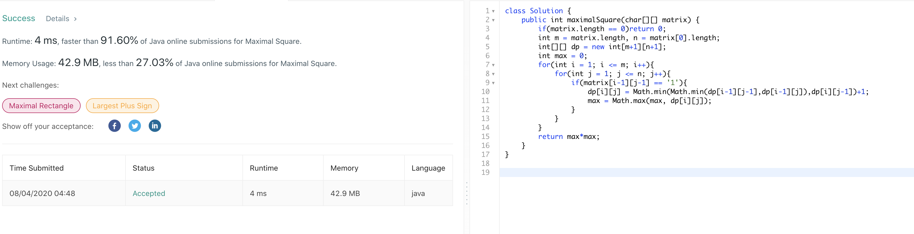222. Count Complete Tree Nodes
官方思路:
- binary search
思路整理：
普通recursion一个个计算node数量的思路容易想到，但就像答案所说的，这样做没有充分利用题目给出的complete binary tree这个条件。我们知道当一个树是complete的时候它的节点数可以直接用2的深度次方-1得出，我们可以利用这个公示结合题目给出的 complete binary tree的条件将时间从o（n）进一步提升。我们可以通过计算左右子树的深度来判断该数是否是完整的，是的话直接用公式返回节点数，否的话递归调用该节点左右子树后+1得到总节点数。由于题目性质，每一层中总会至少有一颗完整的子数可以用 公式直接返回，直到找到最底层最右边节点（导致深度不同的原因），所用时间和搜索特定节点时间相同为o（logn），而计算每层深度又需要o（logn）所以总时间为o（log^2n）。使用位运算而不是math pow计算2的幂的原因是位运算的速度要快上很多。
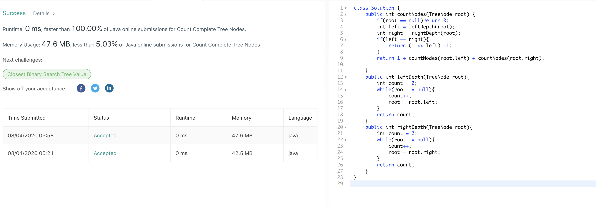223. Rectangle Area
官方思路:
- 通过边界计算overlap
思路整理：
分别计算两块区域的面积很简单，关键在于判断有无重叠以及计算重叠区域面积。我们首先计算两个左边界（a，e）中较大的一方计为left，两个右边界（c，g）中较小的一方计为right，同理计算两个上边界（d，h）中较大的一方计为top，两个下边界中较小的一方计为 bottom。要判断有无重叠只需要判断是否满足（left < right && bottom < top）即可，如果满足则计算重叠区域，否则overlap值为0.最后用两块区域面积和减去overlap区域面积即可。
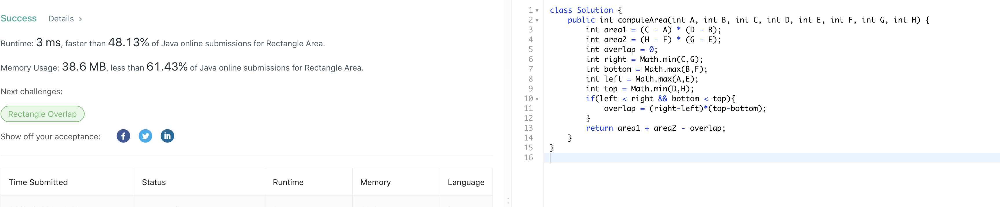225. Implement Stack using Queues
官方思路:
- one queue reverse to stack
思路整理：
除了push其他方法queue和stack没有本质的区别，可以直接套用queue的方法，唯一不同的是push方法。queue将新加入元素放入头部，而stack则是放入尾部，所以每次push新元素后我们需要手动去将queue内部元素位置reverse来将新元素放入尾部。具体方法很简单， 以queue的方式加入新元素到头部后记录queue大小，之后重复将queue poll出来的元素加入头部，进行size-1次就可以将queue内元素顺序转化成stack应有的顺序，即新加入的元素在queue尾部。
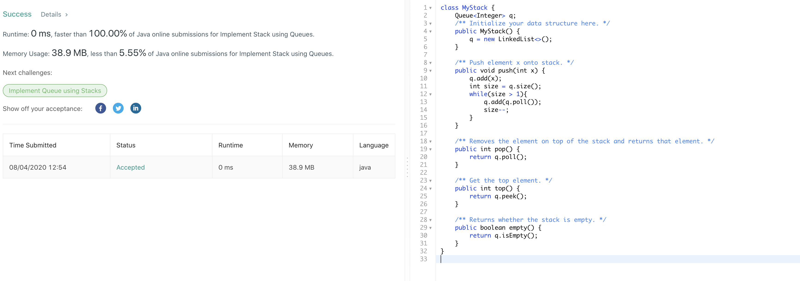226. Invert Binary Tree
官方思路:
- recursion
思路整理：
简单题，使用递归对每个root的左右子树进行交换即可，root为空时返回空，root为leef时返回自己。
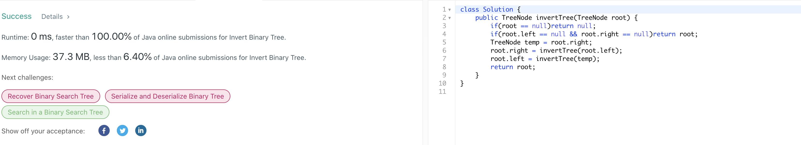227. Basic Calculator II
官方思路:
- stack
思路整理：
四则运算的常见想法是利用stack中的数字结合运算符来计算结果，此题也不例外。但是有两个点值得注意，第一个是如何处理连续的digit产生的数字，我们可以每次将num更新为num*10 + (s.charAt(i)-'0')。乘以10的操作同时处理了连续digit和不连续两种情况， 连续时数字正确的进行了累加，不连续时由于num被重置为了0所以乘以10不会造成影响，巧妙解决了这个问题。另一个点是在遇到运算符时我们直到需要进行结算，注意初始运算符总是加号，将num和stack顶部弹出的数字做当前运算符对应的操作，加或者减法操作直接将num入栈，乘法和除法需要将 弹出的数字乘以num或者除以num后再入栈。值得注意的是当遍历到s最后一个位置时也需要进行结算，尽管此时s对应位置上是digit，如果忘记这个细节就会导致最后一个digit没有被处理而出错。结算完毕后更新sign，重置num即可。最后我们遍历stack将其中所有数字相加就可以得到最终计算结果。 此题思路不难但是需要注意的细节相当多。

228. Summary Ranges
官方思路:
- 一轮遍历
思路整理：
思路比较直接，遍历数组，当数组中的数字处于连续状态时记录i的值为temp，然后extend the range of i。比较新i和temp的值，如果一样则说明没有连续的range，将temp位置数字转化成string加入答案。不一样就说明有range，将temp位置数字和新i位置数字用箭头连接后加入答案。
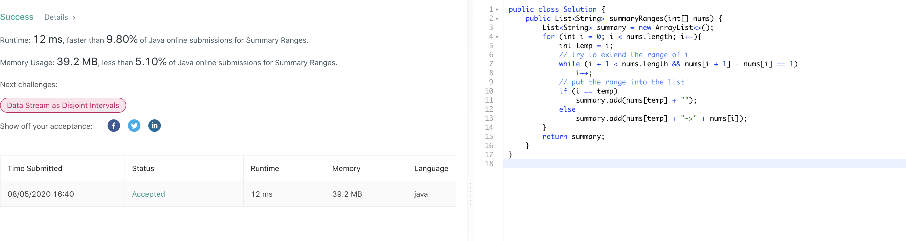229. Majority Element II
官方思路:
- boyer-moore majority vote algorithm
思路整理：
此题介绍了一种用于选出数组中出现次数最多的元素的高效算法，boyer-moore majority vote algorithm。首先根据题目要求可能有不同个数个candidate，当要求多于数组一半时只能有一个满足条件的数字因此只有一个candidate，此题最多可以有两个满足条件的candidate。 算法本身的思想很简单，不同的数字个数互相抵消，相同的数字个数累加，数字个数为0时更新原candidate为新的candidate并将个数重置为1.由于majority的性质，最后满足条件的candidate一定不会被抵消。例如数组12211，首先看到1，由于个数为0，candidate更新为1。下一个 是2，candidate为1，个数抵消为0。下一个还是2，由于个数为0，candidate更新为2，个数重置为1.下一个为1，candidate为2，个数抵消为0.下一个为1，由于个数为0，candidate被更新为1，于是最终结果1是majority vote。宏观来看由于1有三个而2只有两个，所以2不可能将 1完全抵消从而最终会剩下一个1作为答案，该算法利用了这个思想以o（n）速度找出结果。此题我们需要稍作变形，将初始candidate数量变成两个，更新方式保持不变。但是要注意最终两个candidate不一定都大于总数的1/3,我们只保证找到出现次数前二多的数字，是否大于总数1/3需要 再进行一轮单独计算，只有当candidate确实大于总数1/3时才加入答案。
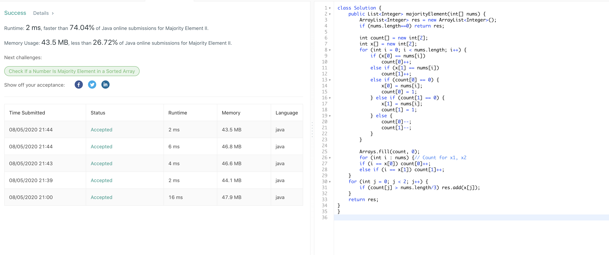230. Kth Smallest Element in a BST
官方思路:
- binary search
- inorder traverse
思路整理：
首先想到了binary search的思路，通过一个count方法我们可以找到当前节点是tree中第几小的（左子树节点数+1），然后通过和k比较得知该往左子树还是右子树寻找目标,向左走则k不变，向右走则更新k值为k-1-左子树节点数，进行递归寻找。找到返回当前node的val即可。第二种方法 是可以利用inorder traversal直接按照从小到大顺序遍历树，到达第k个节点停止即可，方法依然是递归迭代两种，迭代使用stack数据结构这是已经见过很多次的标准操作了，唯一区别就是判断k为0时返回node的值。
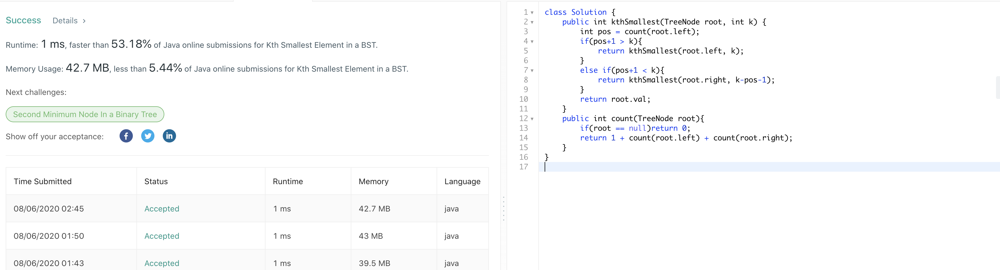231. Power of Two
官方思路:
- O(1) bitwise
思路整理：
此题讨论了两种bitwise operation的常数时间解法。第一种是拿到最右侧的1bit，基于的思想是x和-x只有一个bit是相同的，即右侧第一个1bit，因此我们用x & （-x）可以直接将除了最右侧1之外的其他bit全部变为0。再观察到2的幂的性质，在所有bit中只有一个1，该1也是最右侧的1. 因此我们只需将n转化为long类型后判断n & （-n）是否等于n就可以判断n是否为2的幂。另一种思想基于将最右侧1变为0，我们知道用x & （x-1）就可以将最右侧1变为0，由于2的幂只有这一个1，因此该操作后2的幂后变为0。我们只需判断x & （x-1）是否为0即可。此题有两个bit op的技巧 值得总结，第一是将除了最右侧的1bit其余bit全部变为0的x & （-x）。第二个是将最右侧的1bit变为0的x & （x-1）两个操作。